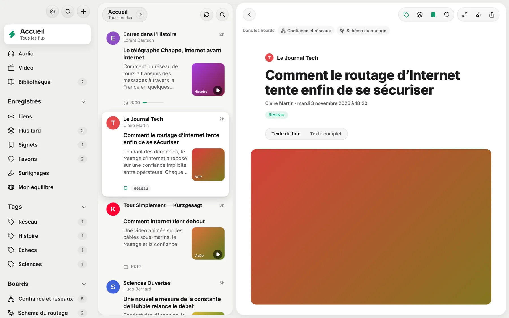
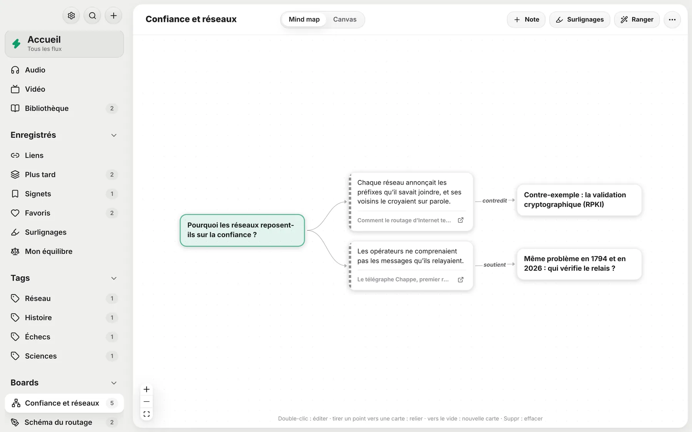
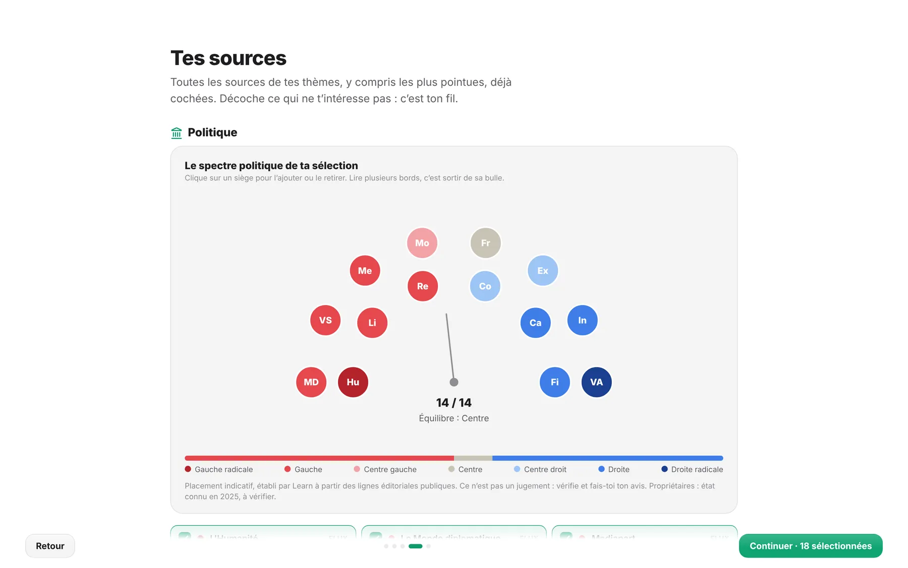
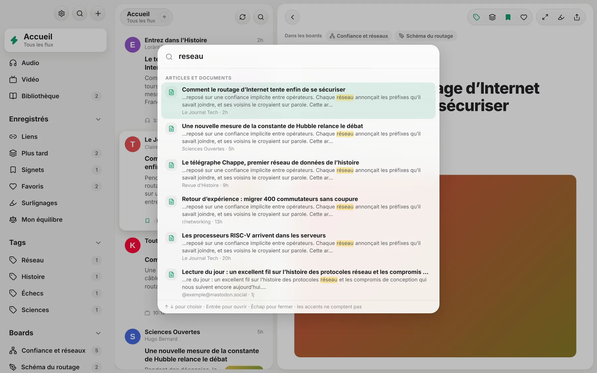

Learn réunit tes flux RSS, chaînes YouTube, podcasts, Reddit et livres dans un seul lecteur. Surligne, annote, relie tes idées en mind maps et exporte vers Obsidian ou Notion. Sans pub, sans compte : tes données restent chez toi.

Pas seulement pour faire défiler : Learn est fait pour lire en profondeur, garder ce qui compte et le retrouver.
Texte complet extrait de la page, typographie soignée, vidéos et podcasts intégrés, livres EPUB et PDF.
Cinq couleurs, des notes en Markdown, des tags. Même sur une vidéo ou un podcast, à l’instant près.
Mind maps, canvas et schémas Excalidraw : tes surlignages deviennent des cartes reliées à leur source.
Un fichier Markdown par document, synchronisé dans les deux sens avec ton coffre Obsidian. Export Notion en un clic.
Les médias politiques placés sur un hémicycle, avec leurs propriétaires, et ton équilibre de lecture au fil des semaines.
Recherche plein texte dans les articles, livres, surlignages et notes, sans te soucier des accents.
Tes articles « Plus tard », signets et favoris sont préparés avec leurs images, pour le train ou l’avion.
Range tes sources par thème ou par type, masque les Shorts, les « bons plans » ou ce qui ne t’intéresse pas.
Envoie un passage vers un board d’un clic : il garde le lien vers sa source, et Learn te montre dans quels boards un article est cité.

Dès le premier lancement, l’hémicycle te montre l’orientation des médias que tu choisis. Une indication pour diversifier tes lectures, pas un verdict.

Raccourcis personnalisables, recherche partout avec /, et des gestes naturels pour garder le rythme.

Une fois installé, Learn se met à jour tout seul.
Mac : l’app n’est pas encore signée par Apple. Au premier lancement, clic droit sur Learn → Ouvrir. Extension Obsidian disponible sur la même page.
La synchronisation entre ordinateurs arrive, puis une app native. Deviens bêta-testeur pour l’essayer en premier et aider à la façonner.
Oui. Learn est open source, sans publicité ni abonnement. Le code est sur GitHub.
Sur ton ordinateur, dans une base locale. Aucun compte n’est nécessaire. Seules tes exportations (Obsidian, Notion) en sortent, et seulement si tu les actives.
Oui : fichier OPML (Reeder, Feedly, NetNewsWire…), abonnements YouTube via Google Takeout, ou une simple liste collée (r/linux, une adresse, @compte@instance).
C’est une estimation à partir des lignes éditoriales publiques, pour t’aider à varier tes lectures. Ce n’est pas un jugement : compare avec AllSides ou Ad Fontes Media et fais-toi ton avis.
Une app native est prévue, après la synchronisation entre appareils. Inscris-toi à la bêta pour être prévenu.